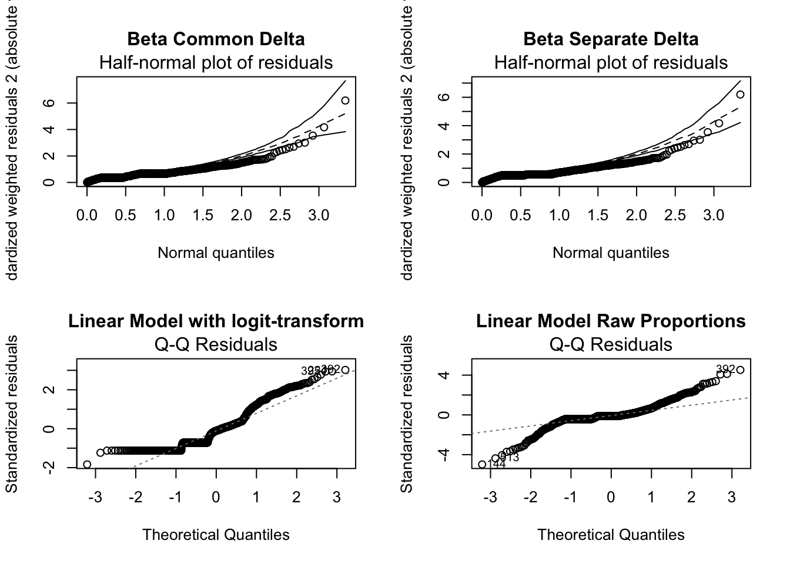

Fcn.CreateSummary.betareg<-function(object.betareg){
OUT<-summary(object.betareg)
tab<-rbind(OUT$coefficients$mean,OUT$coefficients$precision)
return(tab)
}Percent Cover
From Damgaard & Irvine (2019) Using the beta distribution to analyse plant cover data Journal of Ecology. 107:2747-2759
Wrote a function to create a table from betreg object that can be used in xtable()
head(p_cover)# A tibble: 6 × 12
# Groups: Site [1]
layer level class id plot_id perce…¹ Site cover clumpy pd pland pland…²
<dbl> <chr> <dbl> <lgl> <fct> <dbl> <fct> <fct> <dbl> <dbl> <dbl> <dbl>
1 1 class 1 NA 1 100. ana coral 0.992 2.00 1.24 0.0124
2 1 class 1 NA 2 99.9 ana coral 0.990 8.01 6.01 0.0601
3 1 class 1 NA 3 100. ana coral 0.995 4.00 3.22 0.0322
4 1 class 1 NA 4 100. ana coral 0.995 3.00 3.67 0.0367
5 1 class 1 NA 5 99.9 ana coral 0.998 1.00 1.01 0.0101
6 1 class 1 NA 7 100. ana coral 0.991 2.00 0.541 0.00541
# … with abbreviated variable names ¹percentage_inside, ²pland_decimalggplot(p_cover, aes(x = pland_decimal)) +
geom_histogram(fill = "#333399") +
#below here is ylabel, xlabel, and main title
ylab("Frequency") +
xlab(NULL) +
ggtitle(expression("Coral Cover (%)")) +
theme_bw() +
facet_wrap(~ Site, ncol = 1) +
#theme sets sizes, text, etc
theme(axis.title.x = element_text(size = 14),
axis.title.y = element_text(size = 14),
axis.text.y = element_text(size= 10),
axis.text.x = element_text(size = 12),
legend.text = element_text(size = 12),
legend.title = element_text(size = 12),
plot.title = element_text(hjust = 0.5, size = 14),
# change plot background, grid lines, etc (just examples so you can see)
panel.background = element_rect(fill = "white"),
panel.grid.minor.y = element_blank(),
panel.grid.major = element_blank(),
plot.background = element_rect(fill = "white"),
legend.background = element_rect(fill = "white"),
strip.text.x = element_text(size = 12, colour = "#FFFFFF"),
strip.background = element_rect(fill = '#000066')
)`stat_bin()` using `bins = 30`. Pick better value with `binwidth`.
plot(pland_decimal ~ Site, data = p_cover)
Methods for analyzing percent cover of pocilloporid coral
One option for dealing with the 0 and 1 values is to transform them to be slightly less than one or more than zero. This approach assumes that the data are consistent with a common beta distribution. We fit five models to the data: three variations on the beta model and two linear model approaches.
A beta regression assuming a common spatial aggregation \(\delta\) or precision parameter (\(\phi\)) (object named: mod.beta1). Notice that \(\delta= \frac{1}{1+\phi}\) and \(\phi=\frac{(1-\delta)}{\delta}\). A beta regression assuming each year had a different \(\phi\) parameter (object named: mod.beta2).
Another option for modeling the data is to use a zero-one augmented beta model. Currently, the betareg package does not implement this model directly. Therefore, we follow the theoretical results shown in Ospina and Ferrari (2010) that suggest a three-part model can be fit to the data. Basically, we use logistic regression with response an indicator variable for whether or not the plot had zero recorded cover, another logistic regression with response an indicator for whether or not the plot had 100\(\%\) recorded percent cover, and then the beta regression is used to model the continuous percent cover observations ranging from greater than 0 and less than 1.
Other options based on assuming that the residuals are normally distributed is to use a linear model with a logit-transformed response (object named: mod.lmlogit) or a linear model with response untransformed proportions (object named: mod.lmraw).
For comparison this applies a logit-transformation to the empirical proportions and then uses a standard linear regression model.
Raw data - no transformation
p_cover_mod.aov1 <- aov(pland_decimal ~ Site, data = p_cover)
summary(p_cover_mod.aov1) Df Sum Sq Mean Sq F value Pr(>F)
Site 2 7.342 3.671 837.5 <2e-16 ***
Residuals 450 1.972 0.004
---
Signif. codes: 0 '***' 0.001 '**' 0.01 '*' 0.05 '.' 0.1 ' ' 1p_cover_mod.lm1 <- lm(pland_decimal ~ Site, data = p_cover)
summary(p_cover_mod.lm1)
Call:
lm(formula = pland_decimal ~ Site, data = p_cover)
Residuals:
Min 1Q Median 3Q Max
-0.267087 -0.030588 -0.003669 0.032792 0.212867
Coefficients:
Estimate Std. Error t value Pr(>|t|)
(Intercept) 0.015845 0.006793 2.333 0.020101 *
Siteman 0.036108 0.009312 3.877 0.000121 ***
Sitevhu 0.274054 0.007979 34.345 < 2e-16 ***
---
Signif. codes: 0 '***' 0.001 '**' 0.01 '*' 0.05 '.' 0.1 ' ' 1
Residual standard error: 0.06621 on 450 degrees of freedom
Multiple R-squared: 0.7882, Adjusted R-squared: 0.7873
F-statistic: 837.5 on 2 and 450 DF, p-value: < 2.2e-16par(mfrow = c(2, 2))
plot(p_cover_mod.lm1)
Anova(p_cover_mod.lm1, type = "III")Anova Table (Type III tests)
Response: pland_decimal
Sum Sq Df F value Pr(>F)
(Intercept) 0.0239 1 5.4417 0.0201 *
Site 7.3418 2 837.5053 <2e-16 ***
Residuals 1.9724 450
---
Signif. codes: 0 '***' 0.001 '**' 0.01 '*' 0.05 '.' 0.1 ' ' 1Logit-transformation
p_cover_mod.lm2 <- lm(logit(pland_decimal) ~ Site, data = p_cover)
summary(p_cover_mod.lm2)
Call:
lm(formula = logit(pland_decimal) ~ Site, data = p_cover)
Residuals:
Min 1Q Median 3Q Max
-8.3048 -0.2632 0.1011 0.4540 2.4202
Coefficients:
Estimate Std. Error t value Pr(>|t|)
(Intercept) -4.6747 0.1099 -42.535 < 2e-16 ***
Siteman 1.2334 0.1507 8.186 2.81e-15 ***
Sitevhu 3.7312 0.1291 28.900 < 2e-16 ***
---
Signif. codes: 0 '***' 0.001 '**' 0.01 '*' 0.05 '.' 0.1 ' ' 1
Residual standard error: 1.071 on 450 degrees of freedom
Multiple R-squared: 0.6875, Adjusted R-squared: 0.6862
F-statistic: 495.1 on 2 and 450 DF, p-value: < 2.2e-16par(mfrow = c(2, 2))
plot(p_cover_mod.lm2)
Anova(p_cover_mod.lm2, type = "III")Anova Table (Type III tests)
Response: logit(pland_decimal)
Sum Sq Df F value Pr(>F)
(Intercept) 2075.99 1 1809.2 < 2.2e-16 ***
Site 1136.20 2 495.1 < 2.2e-16 ***
Residuals 516.35 450
---
Signif. codes: 0 '***' 0.001 '**' 0.01 '*' 0.05 '.' 0.1 ' ' 1Generalized-linear model
p_cover_mod.glm1 <- glm(pland_decimal ~ Site, family = binomial, data = p_cover)Warning in eval(family$initialize): non-integer #successes in a binomial glm!summary(p_cover_mod.glm1)
Call:
glm(formula = pland_decimal ~ Site, family = binomial, data = p_cover)
Deviance Residuals:
Min 1Q Median 3Q Max
-0.71274 -0.11009 -0.02114 0.09634 0.69909
Coefficients:
Estimate Std. Error z value Pr(>|z|)
(Intercept) -4.1289 0.8216 -5.025 5.02e-07 ***
Siteman 1.2248 0.9290 1.318 0.187340
Sitevhu 3.2330 0.8333 3.880 0.000105 ***
---
Signif. codes: 0 '***' 0.001 '**' 0.01 '*' 0.05 '.' 0.1 ' ' 1
(Dispersion parameter for binomial family taken to be 1)
Null deviance: 74.911 on 452 degrees of freedom
Residual deviance: 14.405 on 450 degrees of freedom
AIC: 191.73
Number of Fisher Scoring iterations: 7par(mfrow = c(2, 2))
plot(p_cover_mod.glm1)
Anova(p_cover_mod.glm1, type = "III")Warning in eval(family$initialize): non-integer #successes in a binomial glm!Analysis of Deviance Table (Type III tests)
Response: pland_decimal
LR Chisq Df Pr(>Chisq)
Site 60.506 2 7.266e-14 ***
---
Signif. codes: 0 '***' 0.001 '**' 0.01 '*' 0.05 '.' 0.1 ' ' 1Beta Regression I: \(\phi\) does not vary
p_cover_mod.beta1 <- betareg(pland_decimal ~ Site, data = p_cover, link = c("logit"), link.phi = NULL, type = c("ML"))Beta Regression II: \(\phi\) does vary (by Site)
p_cover_mod.beta2 <- betareg(pland_decimal ~ Site | Site, data = p_cover, link = c("logit"), link.phi = NULL, type = c("ML"))Extract AIC from beta regression models
p_cover_mod.beta1_aic <- AIC(p_cover_mod.beta1)
p_cover_mod.beta2_aic <- AIC(p_cover_mod.beta2)p_cover_mod.beta1_aic[1] -1494.524p_cover_mod.beta2_aic[1] -1518.568Interpreting results for pocilloporid corals
In order to choose between the beta regression model with a common \(\phi\) versus different \(\phi\), I used AIC but a likelihood ratio or wald test could be used. Using AIC, the model with varying \(\phi\) values had a lower AIC (-1518.568 compared to -1494.524) and therefore more support. We interpret the output from beta regression with the following:
The model we fit assumes \[logit(\mu_j)=\beta_0+\beta_1 Ind_{grp2},\] where \(Ind_{grp2}\) is an indicator for group 2 and \(j\) denotes the group membership so \(j=1\) or \(j=2\). We have \(logit(\mu_2)-logit(\mu_1)=\beta_1\), which is equivalent to \[log(\frac{\mu_2}{1-\mu_2})-log(\frac{\mu_1}{1-\mu_1})= \beta_1.\]
The \(\frac{\mu_j}{1-\mu_j}\) is interpreted as the odds of proportion cover in group \(j\). Therefore,
\[log(\frac{\mu_2}{1-\mu_2}/\frac{\mu_1}{1-\mu_1})=\beta_1\] is the log- odds ratio of cover in group 2 compared to group 1, \[(\frac{\mu_2}{1-\mu_2}/\frac{\mu_1}{1-\mu_1})=exp(\beta_1).\]
Then \(exp(\beta_1)\) is the factor increase/decrease in odds of proportion cover for group 2 compared to group 1, where \(exp(\beta_1)>1\) is an increase and \(exp(\beta_1)<1\) is a decrease, and \(exp(\beta_1) \approx 1\) means essentially no change.
Beta Regression I: \(\phi\) does not vary
| Estimate | Std. Error | z value | Pr(>|z|) | |
|---|---|---|---|---|
| (Intercept) | -3.713 | 0.098 | -38.011 | 0.000 |
| Siteman | 0.707 | 0.117 | 6.035 | 0.000 |
| Sitevhu | 2.810 | 0.100 | 28.024 | 0.000 |
| (phi) | 26.253 | 1.815 | 14.464 | 0.000 |
Beta Regression II: \(\phi\) does vary (by Site)
p_cover_mod.beta2 <- betareg(pland_decimal ~ Site | Site, data = p_cover, link = c("logit"), link.phi = NULL, type = c("ML"))summary(p_cover_mod.beta2)
Call:
betareg(formula = pland_decimal ~ Site | Site, data = p_cover, link = c("logit"),
link.phi = NULL, type = c("ML"))
Standardized weighted residuals 2:
Min 1Q Median 3Q Max
-6.4696 -0.3937 0.1444 0.6941 1.8854
Coefficients (mean model with logit link):
Estimate Std. Error z value Pr(>|z|)
(Intercept) -4.1313 0.1005 -41.097 <2e-16 ***
Siteman 1.2299 0.1387 8.867 <2e-16 ***
Sitevhu 3.2299 0.1041 31.012 <2e-16 ***
Phi coefficients (precision model with log link):
Estimate Std. Error z value Pr(>|z|)
(Intercept) 4.1888 0.1612 25.987 < 2e-16 ***
Siteman -1.2182 0.2188 -5.568 2.58e-08 ***
Sitevhu -0.9607 0.1837 -5.231 1.69e-07 ***
---
Signif. codes: 0 '***' 0.001 '**' 0.01 '*' 0.05 '.' 0.1 ' ' 1
Type of estimator: ML (maximum likelihood)
Log-likelihood: 765.3 on 6 Df
Pseudo R-squared: 0.686
Number of iterations: 15 (BFGS) + 2 (Fisher scoring) The function, Fcn.CreateSummary.betareg, doesn’t work with phi varying, so just fixed labels manually.
p_cover_mod.glm1 <- glm(pland_decimal ~ Site, family = binomial, data = p_cover)Warning in eval(family$initialize): non-integer #successes in a binomial glm!print(xtable(summary(p_cover_mod.glm1), digits = 3, caption = " . "), type = "html")<!-- html table generated in R 4.2.2 by xtable 1.8-4 package -->
<!-- Tue Feb 21 20:03:49 2023 -->
<table border=1>
<caption align="bottom"> . </caption>
<tr> <th> </th> <th> Estimate </th> <th> Std. Error </th> <th> z value </th> <th> Pr(>|z|) </th> </tr>
<tr> <td align="right"> (Intercept) </td> <td align="right"> -4.129 </td> <td align="right"> 0.822 </td> <td align="right"> -5.025 </td> <td align="right"> 0.000 </td> </tr>
<tr> <td align="right"> Siteman </td> <td align="right"> 1.225 </td> <td align="right"> 0.929 </td> <td align="right"> 1.318 </td> <td align="right"> 0.187 </td> </tr>
<tr> <td align="right"> Sitevhu </td> <td align="right"> 3.233 </td> <td align="right"> 0.833 </td> <td align="right"> 3.880 </td> <td align="right"> 0.000 </td> </tr>
</table>| Estimate | Std. Error | z value | Pr(>|z|) | |
|---|---|---|---|---|
| (Intercept) | -4.129 | 0.822 | -5.025 | 0.000 |
| Siteman | 1.225 | 0.929 | 1.318 | 0.187 |
| Sitevhu | 3.233 | 0.833 | 3.880 | 0.000 |


Built-in diagnostic plots for linear regression models
Logit-transformed
par(mfrow = c(3, 2), pty = 'm')
plot(p_cover_mod.lm2)
plot(cooks.distance(p_cover_mod.lm2))
Untransformed
par(mfrow = c(3, 2), pty = 'm')
plot(p_cover_mod.lm1)
plot(cooks.distance(p_cover_mod.lm1))

par(mfrow = c(2,1), pty = 'm', cex = 1)
plot(p_cover_mod.beta2, which = 5, type = "sweighted2", main = "")
plot(p_cover_mod.lm2, which = 2, main = "")
Classical Analysis
From Douma & Weedon (2019)
p_cover.aov1 <- aov(pland_decimal ~ Site, data = p_cover)
summary(p_cover.aov1)
## Df Sum Sq Mean Sq F value Pr(>F)
## Site 2 7.342 3.671 837.5 <2e-16 ***
## Residuals 450 1.972 0.004
## ---
## Signif. codes: 0 '***' 0.001 '**' 0.01 '*' 0.05 '.' 0.1 ' ' 1p_cover.aov2 <- aov(pland_decimal ~ Site + Error(plot_id), data = p_cover)
summary(p_cover.aov2)
##
## Error: plot_id
## Df Sum Sq Mean Sq F value Pr(>F)
## Site 2 1.679 0.8395 157.7 <2e-16 ***
## Residuals 247 1.315 0.0053
## ---
## Signif. codes: 0 '***' 0.001 '**' 0.01 '*' 0.05 '.' 0.1 ' ' 1
##
## Error: Within
## Df Sum Sq Mean Sq F value Pr(>F)
## Site 2 5.663 2.8317 866.2 <2e-16 ***
## Residuals 201 0.657 0.0033
## ---
## Signif. codes: 0 '***' 0.001 '**' 0.01 '*' 0.05 '.' 0.1 ' ' 1A very similar analysis can be conducted using the library nlme for mixed effects modeling.
p_cover.lme1 <- lme(pland_decimal ~ Site, random = ~ 1 | plot_id, data = p_cover)anova(p_cover.lme1) numDF denDF F-value p-value
(Intercept) 1 249 2952.9126 <.0001
Site 2 201 920.5271 <.0001p_cover.lme_null <- lme(pland_decimal ~ 1, random = ~ 1 | plot_id, data = p_cover)lmtest::lrtest(p_cover.lme1, p_cover.lme_null)Likelihood ratio test
Model 1: pland_decimal ~ Site
Model 2: pland_decimal ~ 1
#Df LogLik Df Chisq Pr(>Chisq)
1 5 577.06
2 3 232.95 -2 688.22 < 2.2e-16 ***
---
Signif. codes: 0 '***' 0.001 '**' 0.01 '*' 0.05 '.' 0.1 ' ' 1Beta regression with no variable precision \(\phi\)
We now turn to the beta regression model, that models the response variable as being generated from a beta distribution (i.e. that is bounded at 0 and 1).
The observations of percent cover are based on replicate quadrats replicated within three experimental plots.
We begin by attempting to fit a beta regression model, with pland_decimal as the response, and Site as the categorical predictor.
p_cover.bm1 <- betareg(pland_decimal ~ Site, data = p_cover)betareg will not accept values of 0 and 1 in the response variable.
There are two possible solutions here, rescaling the data to remove 0s and 1s, or fitting zero-inflated models. We start here with the rescaling solution. A suggested rescaling equation is:
\[ x^*_{i} = \frac{x_i(n-1)+0.5}{n} \]
Where \(x^*_i\) is the transformation of \(x_i\) and \(n\) is the total number of observations in the dataset.
For convenience we define this as a custom function tranform01 and apply it to the dataset:
transform01 <- function(x) {
(x * (length(x) - 1) + 0.5) / (length(x))
}With this scaled data we can now successfully fit the model. And test its significance relative to a null model that assumes no effect of wave power on percent cover of pocilloporid corals. For reference we also fit a classical ANOVA model assuming normally distributed errors using lm.
p_cover.bmnull <- betareg(pland_decimal ~ 1, data = p_cover)
summary(p_cover.bmnull)
Call:
betareg(formula = pland_decimal ~ 1, data = p_cover)
Standardized weighted residuals 2:
Min 1Q Median 3Q Max
-5.6692 -0.7474 0.4788 0.8374 1.2399
Coefficients (mean model with logit link):
Estimate Std. Error z value Pr(>|z|)
(Intercept) -1.6059 0.0546 -29.41 <2e-16 ***
Phi coefficients (precision model with identity link):
Estimate Std. Error z value Pr(>|z|)
(phi) 4.1759 0.2831 14.75 <2e-16 ***
---
Signif. codes: 0 '***' 0.001 '**' 0.01 '*' 0.05 '.' 0.1 ' ' 1
Type of estimator: ML (maximum likelihood)
Log-likelihood: 373 on 2 Df
Number of iterations: 11 (BFGS) + 2 (Fisher scoring) p_cover.lm1 <- lm(pland_decimal ~ Site, data = p_cover)
summary(p_cover.lm1)
Call:
lm(formula = pland_decimal ~ Site, data = p_cover)
Residuals:
Min 1Q Median 3Q Max
-0.267087 -0.030588 -0.003669 0.032792 0.212867
Coefficients:
Estimate Std. Error t value Pr(>|t|)
(Intercept) 0.015845 0.006793 2.333 0.020101 *
Siteman 0.036108 0.009312 3.877 0.000121 ***
Sitevhu 0.274054 0.007979 34.345 < 2e-16 ***
---
Signif. codes: 0 '***' 0.001 '**' 0.01 '*' 0.05 '.' 0.1 ' ' 1
Residual standard error: 0.06621 on 450 degrees of freedom
Multiple R-squared: 0.7882, Adjusted R-squared: 0.7873
F-statistic: 837.5 on 2 and 450 DF, p-value: < 2.2e-16lmtest::lrtest(p_cover.bm1, p_cover.bmnull)Likelihood ratio test
Model 1: pland_decimal ~ Site
Model 2: pland_decimal ~ 1
#Df LogLik Df Chisq Pr(>Chisq)
1 4 751.26
2 2 372.96 -2 756.59 < 2.2e-16 ***
---
Signif. codes: 0 '***' 0.001 '**' 0.01 '*' 0.05 '.' 0.1 ' ' 1AIC(p_cover.bm1, p_cover.lm1, p_cover.bmnull) df AIC
p_cover.bm1 4 -1494.5243
p_cover.lm1 4 -1169.2387
p_cover.bmnull 2 -741.9293According to the likelihood-ratio test there is a significant difference betwen the null model and the treatment model. The AIC analysis supports this conclusion, but also highlights the improved model fit with beta regression relative to normal ANOVA (lm1). From this initial analysis we would tentatively conclude that using beta regresson improves our ability to model the algal cover, but that there is no effect of grazer manipulation treatment.
It is useful to plot the predictions derived from the model and compare them to the observed data. First we define two new functions to allow us to use the dbeta and rbeta functions with the \(\mu\) and \(\phi\) parameterization.
dbeta2 <- function(X, mu, phi, ...) {
dbeta(X, shape1 = mu * phi, shape2 = (1 - mu) * phi, ...)
}
rbeta2 <- function(N, mu, phi, ...) {
rbeta(N, shape1 = mu * phi, shape2 = (1 - mu) * phi, ...)
}With this function we can plot the distributions corresponding to the MLE parameters for each treatment :
# extract coefficients of beta regression model
coefs.bm1 <- coef(p_cover.bm1)
# create vector spanning the transformed 0-1 interval
n.bm2 <- length(fitted(p_cover.bm1))
x.range <- seq(0.5/n.bm2 , 1-0.5/n.bm2 , length.out = 200)
x.range.bt <- (x.range*n.bm2 - 0.5)/(n.bm2-1)# Anakena
plot(x.range.bt, dbeta2(x.range, inv.logit(coefs.bm1["(Intercept)"]), coefs.bm1["(phi)"]),
type = "l", lty = 2, lwd = 2,
ylab = "Probability density", xlab = "Proportion cover",
ylim=c(0, 10)
)
# Manavai
lines(x.range.bt, dbeta2(x.range, inv.logit(coefs.bm1["(Intercept)"] + coefs.bm1[2]), coefs.bm1["(phi)"]),lwd = 2, col = "red")
# Vaihu
lines(x.range.bt, dbeta2(x.range, inv.logit(coefs.bm1["(Intercept)"] + coefs.bm1[3]), coefs.bm1["(phi)"]), col = "blue", lwd = 2)
rug(p_cover$pland_decimal[p_cover$Site == "ana"], lwd = 1.5, pos = 10)
rug(p_cover$pland_decimal[p_cover$Site == "man"],col="red", pos = 9.75, side = 3,lwd=1.5)
rug(p_cover$pland_decimal[p_cover$Site == "vhu"], col="blue", pos = 9.5, side = 3, lwd=1.5)
legend("topright", lwd = 2, lty = c(2, 1, 1, 1), col = c("black", "red", "blue"), legend = c("Anakena", "Manavai", "Vaihu"), bty = "n")
We have added the original observations as ticks of the appropriate colour, and back-transformed the densities to allow fair visual comparisons between the fitted distributions and the original data using:
\[ x_{i} = \frac{x^*_in-0.5}{(n-1)} \]
Note that the vertical positioning of the dots is merely to prevent overplotting.
From this plot we can see that the model does a reasonable job of fitting beta distributions to each of the treatment levels… And that likewise, the variance of the groups …. This can be confirmed with a residual plot, using residuals calculated relative to their predicted variance.
plot(resid(p_cover.bm1) ~ fitted(p_cover.bm1))
Is this statement accurate?
The spread of the standardized residuals is strongly related to the fitted values, suggesting that variance is not being adequately modeled. This observation suggests the possible utility of allowing for the precision parameter \(\phi\) to vary between treatment groups. The following section will show extension of the beta regression model to allow for this.
Variable precision \(\phi\)
We can repeat the above analysis using a model that allows \(\phi\) to vary with predictors. This is achieved by adding a second part to the right hand side of the formula, separated with the | symbol. All covariates to the right of this | symbol will be used to model \(\phi\). Note that they do not have to be the same covariates used to model \(\mu\) (specified to the left of the |).
p_cover.bm2 <- betareg(pland_decimal ~ Site | Site, data = p_cover)
summary(p_cover.bm2)
Call:
betareg(formula = pland_decimal ~ Site | Site, data = p_cover)
Standardized weighted residuals 2:
Min 1Q Median 3Q Max
-6.4696 -0.3937 0.1444 0.6941 1.8854
Coefficients (mean model with logit link):
Estimate Std. Error z value Pr(>|z|)
(Intercept) -4.1313 0.1005 -41.097 <2e-16 ***
Siteman 1.2299 0.1387 8.867 <2e-16 ***
Sitevhu 3.2299 0.1041 31.012 <2e-16 ***
Phi coefficients (precision model with log link):
Estimate Std. Error z value Pr(>|z|)
(Intercept) 4.1888 0.1612 25.987 < 2e-16 ***
Siteman -1.2182 0.2188 -5.568 2.58e-08 ***
Sitevhu -0.9607 0.1837 -5.231 1.69e-07 ***
---
Signif. codes: 0 '***' 0.001 '**' 0.01 '*' 0.05 '.' 0.1 ' ' 1
Type of estimator: ML (maximum likelihood)
Log-likelihood: 765.3 on 6 Df
Pseudo R-squared: 0.686
Number of iterations: 15 (BFGS) + 2 (Fisher scoring) From the Coefficients table we see that the estimate for \(\mu\) in the Control treatment is inv.logit(-4.1313) = X = X% coral cover. Moreover, the estimates of \(\mu\) for the other two Sites (treatments) are each significantly higher.
From the Phi coefficients table we can see that the maximum likelihood estimate of the precision is highest in the Control treatment and is reduced significantly relative to this baseline in each of other treatment groups. In other words, the model fit confirms our impression from the previous two graphs that a fixed \(\phi\) model overestimates variance in the Control treatment, and underestimates it in the other three treatments.
We can use likelihood-ratio tests to compare the new model to the fixed-\(\phi\) and null models.
lmtest::lrtest(p_cover.bm1, p_cover.bm2)Likelihood ratio test
Model 1: pland_decimal ~ Site
Model 2: pland_decimal ~ Site | Site
#Df LogLik Df Chisq Pr(>Chisq)
1 4 751.26
2 6 765.28 2 28.044 8.136e-07 ***
---
Signif. codes: 0 '***' 0.001 '**' 0.01 '*' 0.05 '.' 0.1 ' ' 1lmtest::lrtest(p_cover.bmnull, p_cover.bm1, p_cover.bm2)Likelihood ratio test
Model 1: pland_decimal ~ 1
Model 2: pland_decimal ~ Site
Model 3: pland_decimal ~ Site | Site
#Df LogLik Df Chisq Pr(>Chisq)
1 2 372.96
2 4 751.26 2 756.595 < 2.2e-16 ***
3 6 765.28 2 28.044 8.136e-07 ***
---
Signif. codes: 0 '***' 0.001 '**' 0.01 '*' 0.05 '.' 0.1 ' ' 1The likelihood ratio tests indicate that the model with varying \(\phi\) is significantly better than both the previous fixed \(\phi\) model, and the null model. In this case the conclusion is that including the model for \(\phi\) led to a better fitting model than both the fixed \(\phi\) model and the null model.
It is possible to apply post-hoc tests to identify which pariwise contrasts of treatments levels are significant.
test(pairs(emmeans(p_cover.bm2, ~ Site, mode = "link"))) contrast estimate SE df z.ratio p.value
ana - man -1.23 0.1387 Inf -8.867 <.0001
ana - vhu -3.23 0.1041 Inf -31.012 <.0001
man - vhu -2.00 0.0994 Inf -20.127 <.0001
Results are given on the log odds ratio (not the response) scale.
P value adjustment: tukey method for comparing a family of 3 estimates We conclude from this analysis that each Site treatment is significantly different to each other. This is an important point: correct modeling of \(\phi\) can often be important for accurate inference on \(\mu\).
Residual plots confirm our conclusion that p_cover.bm2 provides a better fit to the observed data than p_cover.bm1. This is seen by the more even spread of residuals in the second plot below.
par(mfrow = c(2, 1), oma = c(0, 0, 0, 0), mar = c(4, 4, 0.2, 0.2))
plot(residuals(p_cover.bm1) ~ fitted(p_cover.bm1))
plot(residuals(p_cover.bm2) ~ fitted(p_cover.bm2))
As above we can plot the MLE distributions for each of the treatments, based on the variable \(\phi\) model:
# plot distributions
muphi.bm2 <- unique(data.frame(
mu = fitted(p_cover.bm2),
phi = predict(p_cover.bm2, type = "precision"),
treatment = p_cover$Site
))plot(x.range.bt , dbeta2(x.range, muphi.bm2[1, 1], muphi.bm2[1, 2]),
type="l",
xlab = "Proportion cover", ylab = "Probability density",
lty = 2, lwd = 2)
for (i in 2:3) {
lines(x.range.bt, dbeta2(x.range, muphi.bm2[i, 1], muphi.bm2[i, 2]), col = c("black", "red", "blue")[i], lty = 1, lwd = 2)
}
legend("topright", lwd = 2, lty = c(2, 1, 1, 1), col = c("black", "red", "blue"), legend = c("Anakena", "Manavai", "Vaihu"), bty = "n")
Due to the much narrower variance of the Control treatment group in this model, the probability density plots of the other treatments are rather distorted. The graph below rescales the Y axis for comparison to the fixed \(\phi\) model above.
plot(x.range.bt , dbeta2(x.range, muphi.bm2[1, "mu"], muphi.bm2[1, "phi"]),
type="l",
xlab = "Proportion cover", ylab = "Probability density",
lty = 2, lwd = 2, ylim = c(0,10))
for (i in 2:3) {
lines(x.range.bt, dbeta2(x.range, muphi.bm2[i, "mu"], muphi.bm2[i, "phi"]), col = c("black", "red", "blue")[i], lty = 1, lwd = 2)
}
legend("topright", lwd = 2, lty = c(2, 1, 1, 1), col = c("black", "red", "blue"), legend = c("Anakena", "Manavai", "Vaihu"), bty = "n")
rug(p_cover$pland_decimal[p_cover$Site == "ana"], lwd = 1.5, pos = 10)
rug(p_cover$pland_decimal[p_cover$Site == "man"], col = "red", pos = 9.75, side = 3,lwd = 1.5)
rug(p_cover$pland_decimal[p_cover$Site == "vhu"], col = "blue", pos = 9.5, side = 3, lwd = 1.5)
These plots support the conclusion from the likelihood ratio tests above. The best-fit distributions from the variable \(\phi\) model better match the observed differences in dispersion between the different groups.
poci_cover <-
p_cover %>%
as_tibble() %>%
# mutate(size_cm = area*10000) %>%
group_by(Site) %>%
dplyr::summarize(mean = mean(pland_decimal),
sd = sd(pland_decimal),
n = n(),
se = sd/sqrt(n)
) %>%
mutate(se = sd / sqrt(n),
lower.ci = mean - qt(1 - (0.05 / 2), n - 1) * se,
upper.ci = mean + qt(1 - (0.05 / 2), n - 1) * se) %>%
mutate_at(vars(Site), factor) %>%
add_column(
location = c('Anakena', 'Manavai', 'Southeast')
) %>%
mutate_at(vars(location), factor)poci_cover2 <-
poci_cover %>%
add_column(
cld = c('a', 'b', 'c')
) %>%
mutate_at(vars(cld), factor)poci_cover2# A tibble: 3 × 9
Site mean sd n se lower.ci upper.ci location cld
<fct> <dbl> <dbl> <int> <dbl> <dbl> <dbl> <fct> <fct>
1 ana 0.0158 0.0128 95 0.00131 0.0132 0.0184 Anakena a
2 man 0.0520 0.0512 108 0.00493 0.0422 0.0617 Manavai b
3 vhu 0.290 0.0821 250 0.00519 0.280 0.300 Southeast c x_labels = c("Anakena", "Manavai", "Vaihu")
# label_names = c("8 m" = "8 m", "15 m" = "15 m", "25 m" = "25 m")poci_cover.ggbarplot <- ggplot(poci_cover2, aes(x = location, y = mean)) +
geom_bar(stat = "identity", width = 0.75, color = "black", fill = "#333399", size = 0.50, alpha = 0.6) +
geom_linerange(aes(ymin = lower.ci, ymax = upper.ci), size = 0.75) +
scale_y_continuous(expression(paste("Mean Percent Cover (%)")), limits = c(0, 1)) +
scale_x_discrete(expand = c(0, 1), labels = x_labels) +
# scale_fill_manual(breaks = c("North", "West",
# "Southeast"),
# values = c("red", "blue",
# "green"),
# labels = c("North", "West",
# "Southeast")) +
# facet_wrap( ~ depth2, labeller = as_labeller(label_names), dir = "v", ncol = 1) +
ggtitle(expression(paste(italic(" Pocillopora "), "spp."))) +
geom_text(aes(label = cld, y = upper.ci), vjust = -0.5) +
#scale_y_log10(expression(paste("Colony Size (", cm^2, ")"), limits = c(0, 100000))) +
labs(x = NULL) +
theme(strip.text = element_text(size = 10, color = "black", hjust = 0.50),
strip.background = element_rect(fill = "#FFFFFF", color = NA),
panel.background = element_rect(fill = "#FFFFFF", color = NA),
panel.grid.major.x = element_blank(),
panel.grid.minor.x = element_blank(),
panel.grid.minor.y = element_blank(),
panel.grid.major.y = element_line(color = "#b2b2b2"),
panel.spacing.x = unit(1, "cm"),
panel.spacing.y = unit(0.5, "cm"),
panel.spacing = unit(1, "lines"),
axis.ticks = element_blank(),
legend.position = "top",
plot.title = element_text(size = 11),
axis.title.y = element_text(size = 11),
legend.title = element_blank())Warning: Using `size` aesthetic for lines was deprecated in ggplot2 3.4.0.
ℹ Please use `linewidth` instead.poci_cover.ggbarplot